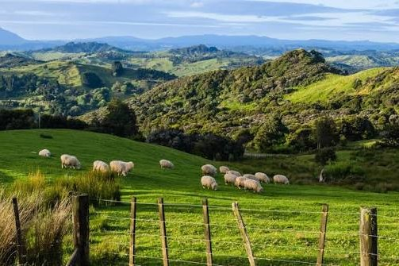

I made this website to inform people on different environmental sightseeing places around New Zealand. I also made this wesbite to show the importance of the enviroment in our lives and our beautiful Aotearoa. We should all strive to show Kaitiakitanga: stewardship, care for the natural environment, land, water, and living things.